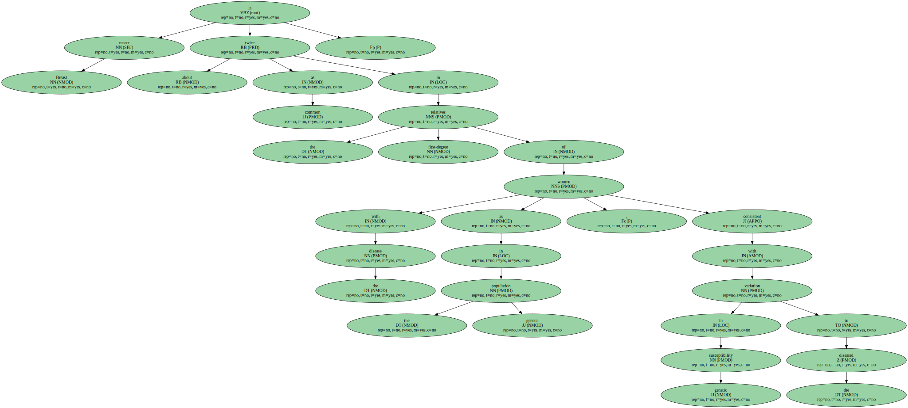
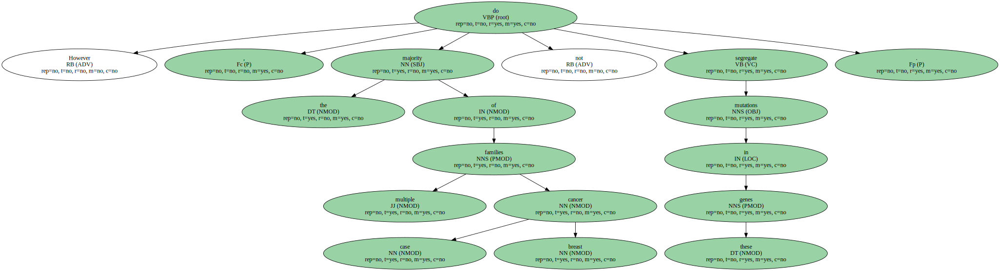
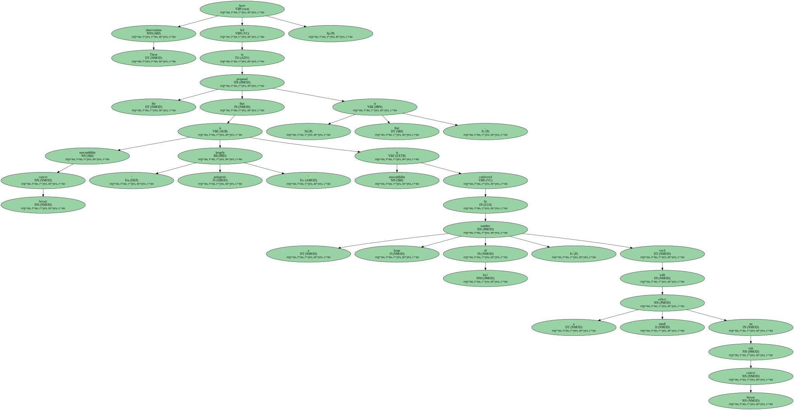
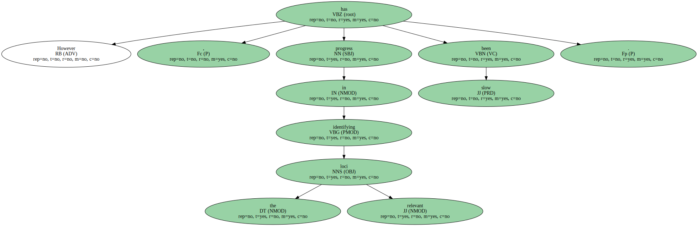

Breast cancer exhibits familial aggregation, consistent with variation in genetic susceptibility to the disease.
Known susceptibility genes account for less than 25_% of the familial risk of breast cancer, and the residual genetic variance is likely to be due to variants conferring more moderate risks.
To identify further susceptibility alleles, we conducted a two-stage genome-wide association study in 4,398 breast cancer cases and 4,316 controls, followed by a third stage in which 30 single nucleotide polymorphisms (SNPs) were tested for confirmation in 21,860 cases and 22,578 controls from S22 studies.
We used 227,876 SNPs that were estimated to correlate with 77_% of known common SNPs in Europeans at r2 > 0.5.
SNPs in five novel independent loci exhibited strong and consistent evidence of association with breast cancer (P < 10 (-7)).
Four of these contain plausible causative genes (FGFR2, TNRC9, MAP3K1 and LSP1).
At the second stage, 1,792 SNPs were significant at the P < 0.05 level compared with an estimated 1,343 that would be expected by_chance, indicating that many additional common susceptibility alleles may be identifiable by this approach.
Breast cancer is about twice as common in the first-degree relatives of women with the disease as in the general population, consistent with variation in genetic susceptibility to the disease1.
In the 1990s, two major susceptibility genes for breast cancer, BRCA1 and BRCA2, were identified.
Inherited mutations in these genes lead to a high risk of breast and other cancers.
However, the majority of multiple case breast cancer families do not segregate mutations in these genes.
Subsequent genetic linkage studies have failed to identify further major breast cancer genes.
These observations have led to the proposal that breast cancer susceptibility is largely ‘ polygenic ’: that is, susceptibility is conferred by a large number of loci, each with a small effect on breast cancer risk.
This model is consistent with the observed patterns of familial aggregation of breast cancer.
However, progress in identifying the relevant loci has been slow.
As linkage studies lack power to detect alleles with moderate effects on risk, large case-control association studies are required.
Such studies have identified variants in the DNA repair genes CHEK2 , ATM , BRIP1 and PALB2that confer an approximately twofold risk of breast cancer, but these variants are rare in the population -.
A recent study has shown that a common coding variant in CASP8 is associated with a moderate reduction in breast cancer risk.
After accounting for all the known breast cancer loci, more than 75_% of the familial risk of the disease remains unexplained.
Recent technological advances have provided platforms that allow hundreds of thousands of SNPs to be analysed in association studies, thus providing a basis for identifying moderate risk alleles without prior knowledge of position or function.

It has been estimated that there are 7_million common SNPs in the human genome (with minor allele frequency, m. a. f., > 5_%).
However, because recombination tends to occur at distinct ‘ hot-spots ’, neighbouring polymorphisms are often strongly correlated (in ‘ linkage disequilibrium ’, LD) with each other.
The majority of common genetic variants can therefore be evaluated for association using a few hundred thousand SNPs as tags for all the other variants.
We aimed to identify further breast cancer susceptibility loci in a three-stage association study.
In the first stage, we used a panel of 266,722 SNPs, selected to tag known common variants across the entire genome18.
These SNPs were genotyped in 408 breast cancer cases and 400 controls from the UK ; data were analysed for 390 cases and 364 controls genotyped for ≥ 80_% of the SNPs.
The cases were selected to have a strong family history of breast cancer, equivalent to at_least two affected female first-degree relatives, because such cases are more likely to carry susceptibility alleles.
Initally, we analysed 227,876 SNPs (85_%) with genotypes on at_least 80_% of the subjects.
We estimate that these SNPs are correlated with 58_% of common SNPs in the HapMap_CEPH / CEU (Utah residents with ancestry from northern and western Europe) samples at r2 > 0.8, and 77_% at r2 > 0.5 (mean r2=0.75 ; see Supplementary_Fig. 1) (http://www.hapmap.org/).
As expected, coverage was strongly related to m. a. f.: 70_% of SNPs with m. a. f. > 10_% were tagged at r2 > 0.8, compared with 23_% of SNPs with m. a. f. 5 – 10_%.
The main analyses were restricted to 205,586 SNPs that had a call rate of 90_% and whose genotype distributions did not differ from Hardy – Weinberg equilibrium in controls (at P < 10 − 5).
For the second stage we selected 12,711 SNPs, approximately 5_% of those typed in stage 1, on the basis of the significance of the difference in genotype frequency between cases and controls.
These SNPs were then genotyped in a further 3,990 invasive breast cancer cases and 3,916 controls from the SEARCH study, using a custom-designed oligonucleotide array.
In the main analyses, we considered 10,405 SNPs with call rate of > 95_% that did not deviate from Hardy – Weinberg equilibrium in controls.
Comparison of the observed and expected distribution of test statistics showed some evidence for an inflation of the test statistics in both stage 1 (inflation factor λ=1.03, 95_% confidence interval (CI) 1.02 – 1.04) and stage 2 (λ=1.06, 95_% CI 1.04 – 1.12), based on the 90_% least significant SNPs (Fig. 1).

Possible explanations for this inflation include population stratification, cryptic relatedness among subjects, and differential genotype calling between cases and controls.
There was evidence for an excess of low call rate SNPs among the most significant SNPs (P < 0.01) in stage 1, but not in stage 2, suggesting that some of this effect is a genotyping artefact (Supplementary_Table 1).
However, the inflation was still present among SNPs with call rate > 99_% in both cases and controls, possibly reflecting population sub-structure.
We computed 1 degree of freedom (d. f.) association tests for each SNP, combining stages 1 and 2.
After adjustment for this inflation by the genomic control method, we observed more associations than would have been expected by_chance at P < 0.05 (Table 1).
One SNP (dbSNP rs2981582) was significant at the P < 10 − 7 level that has been proposed as appropriate for genome-wide studies.